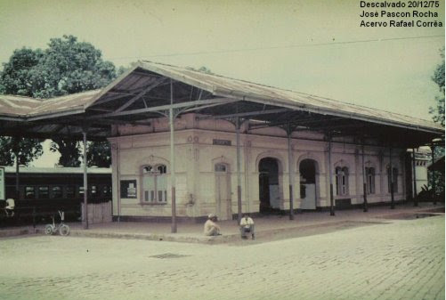
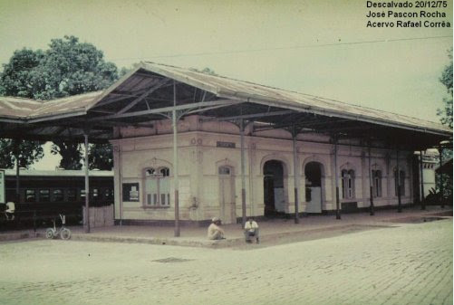

Um Pouco de História: Descalvado
A história de Descalvado começa por volta de 1809, com a chegada dos pioneiros Nicolau Antônio Lobo, Manoel Antonio Lobo e Agostinho José Alves de Amorim. Pouco depois, em 1820, juntaram-se a eles José Ferreira da Silva e Tomé Ferreira da Silva. Os primeiros habitantes estabeleceram-se no centro e no sul do atual município, aproveitando as terras férteis e evitando as febres intermitentes que ocorriam próximo ao Rio Mogi Guaçu.
Em 8 de setembro de 1832, foi inaugurada a Capela de Nossa Senhora do Belém, construída por José Ferreira da Silva, dando início ao povoado que, em 1842, se tornaria a Vila de Belém do Descalvado após a doação de terras para a Igreja.
Fonte: Site Prefeitura de Descalvado
Origem do Nome
O nome da cidade vem do Morro do Descalvado. Antes da fundação, as terras não tinham denominação específica. Com a elevação à freguesia, o local passou a ser chamado de Freguesia de Nossa Senhora do Belém do Descalvado. O termo "Descalvado" refere-se ao morro que, por apresentar partes rochosas e ser desprovido de vegetação em algumas áreas, parecia "calvo" ou "escalvado".
Fonte : Informações obtidas na obra "Conheça Descalvado", de Luiz Carlindo Arruda Kastein
 

O Espetáculo da Natureza
Com um volume de água estimado em 800 litros por segundo, a cachoeira cria um espetáculo de beleza natural em meio a um vale de vegetação preservada. A queda despenca por um paredão rochoso, formando uma piscina natural em sua base, ideal para contemplação.
Características e Dicas
- Acesso Rústico: O caminho se dá por estrada de terra e uma trilha curta. O local não possui infraestrutura turística, então vá preparado com calçados apropriados, água e lanche.
- Potencial para Aventura: O paredão rochoso é procurado para a prática de esportes de aventura, como o rapel.
- História: Nos anos 40, houve um plano para construir uma pequena usina elétrica no local, projeto que nunca foi adiante, preservando sua beleza natural.
Galeria de Fotos


Como Chegar
O acesso principal se dá pela rodovia SP-215 (sentido São Carlos). A partir dela, a melhor forma de chegar é utilizando um aplicativo de mapas como Waze ou Google Maps, que indicará a entrada correta para a estrada de terra que leva até a cachoeira.